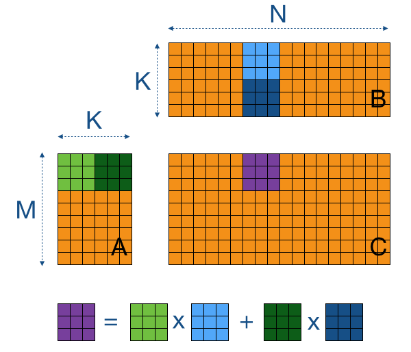

Week 1:2
GPU Computing encompasses a lot of concepts of parallel programming. My first two weeks into GSoC made me realise that not only did I lack some of the basic concepts but also that this platform was providing me with the excellent opportunity to learn and verify any knowledge I acquire.
In the very beginning, I was working pretty much on my own, blind to the fact that now I am a part of an excellent community. Though I was getting stuck at various times, I was not much willing to speak up because I thought I would be disturbing my mentors too much, who have got other GSoC students to cater to and the responsibility of maintaining their Julia packages which were being used in the industry. But, such walls were broken when my primary mentor, Simon Danisch himself messaged me that he realised that I was unable to seek proper help from the community. He asked me to ask him whatever doubts I had, however lame they might sound, for, it could be solved by my mentors in a matter of few minutes but would take me hours as I was just a beginner. Since then, even my mentor invested a lot of time and energy in my GSoC work. Hence, after the few initial days, this communication barrier broke and I figured out ways to get more help from the community.
My work these two weeks mainly focussed on improving the implementation of generic matrix multiplication − incorporation of the tiling method, its optimisation and benchmarking. The tiling method breaks the parallel processing into blocks, each block supporting a particular number of parallel threads. While attempting to multiply two matrices, we compute the output in blocks. For this, we break the input matrices into corresponding rows of the first and columns of the second, and iteratively update the values in the output by summing up the results of multiplications of the blocks of the input matrices. The illustration helps sum up the procedure.
A lot of problems were being encountered creating the Julia implementation. A major time was spent getting rid of the error which stated that a request for too many resources was being made. We tried figuring out the limit and tried to keep within it, yet we could not do away with the error. We went with an alternative approach but invested enough time trying to debug what was going wrong in the initial attempt. As requested by my mentor, I tried developing a "Minimum Working Example" using CUDAnative to reproduce the error, which could be posted to the community for a review.
Another major issue faced was making proper use of gpu_sub2ind, a function which converts multidimensional indexing to a linear one, and is explicitly suited to a GPU. Initially, I was providing the linear indexing manually but thought using this function is more sensible as it makes the code easier to understand and extend. But this made the performance go downhill, and at times, the CPU outperformed the GPU.
I also learnt the usage of the @inbounds macro from my mentor. It served two purposes for a GPU kernel. Using @inbounds prevented checking for bounds error, hence it meant faster processing. Along with that, bounds checking has throw statements internally which also causes errors on a GPU. Hence, prevention of bounds checking is a necessity for GPU kernels.
I also checked out OpenCL.jl to verify the accuracy of some OpenCL kernels written in C. OpenCL.jl features writing launch codes in Julia, keeping the kernels in C. This makes creating launch codes extremely easy. I figured out very quickly the capacity of the C kernel using this package. I was stuck in developing proper launch code in C for some time and this package acted like a saviour!
Hence, the benchmarking was performed without gpu_sub2ind. Currently these two issues remain, though we have alternate solutions in place. Along with that, now I am working on an improved version of the kernel. The benchmarking may be found here. The work-in-progress pull request may be viewed here.